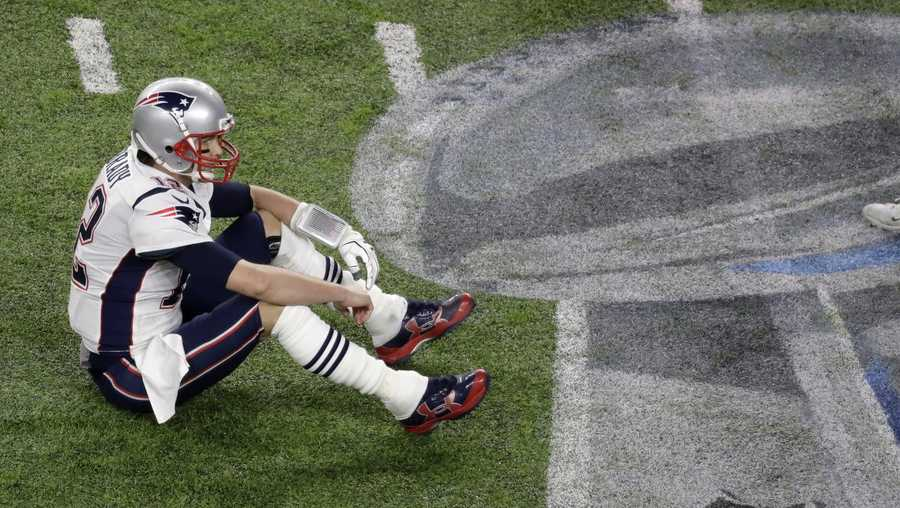

Top 7 de los equipos más laureados en el Superbowl
|
- Pittsburgh Steelers: 6
- Boston/New England Patriots:6
- Dallas Cowboys:5
- San Francisco 49ers:5
- Green Bay Packers:4
- New York Giants:4
- Denver Broncos:3
|
|
Top 7 de los equipos con más derrotas en el Superbowl
|
- Boston/New England Patriots: 5
- Denver Broncos:5
- Buffalo Bills:4
- Minnesota Vikings:4
- St. Louis/Los Ángeles Rams:4
- Miami Dolphins:3
- Dallas Cowboys:3
|

|
Top 7 de jugadores con más victorias en el Superbowl
|
- Tom Brady:7
- Charles Haley:5
- Ted Hendriks: 4
- Marv Fleming:4
- Matt Millen:4
- Joe Montana:4
- Adam Vinatieri:4
|

|
Jugadores que han ganado en MVP más veces en el Superbowl
|
- Tom Brady:5
- Joe Montana:3
- Bart Starr:2
- Marv Fleming:2
- Terry Bradshaw:2
- Eli Manning:2
|
|